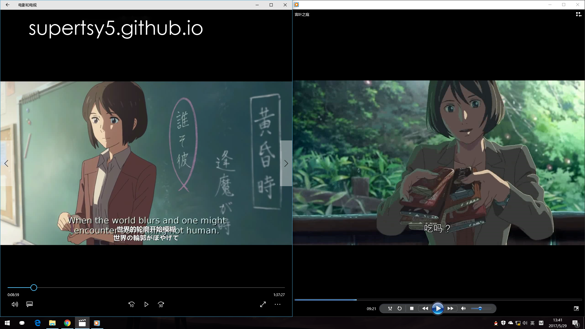
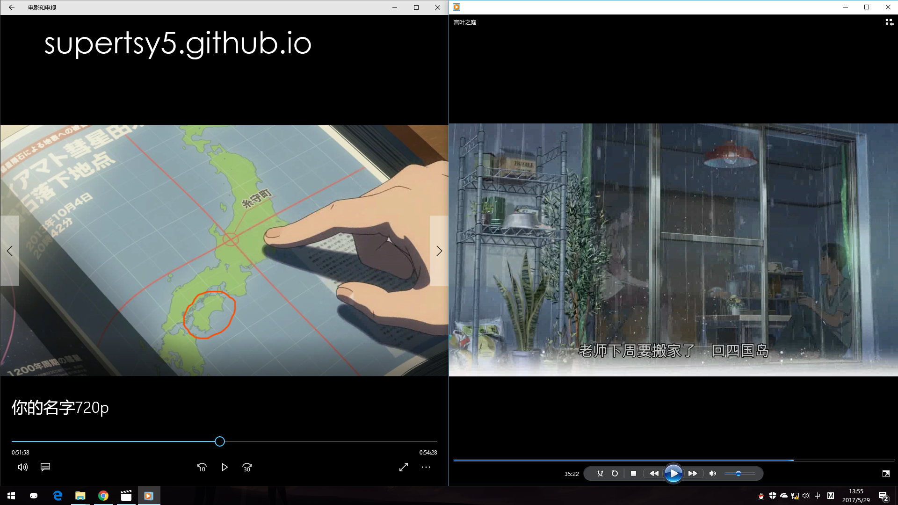
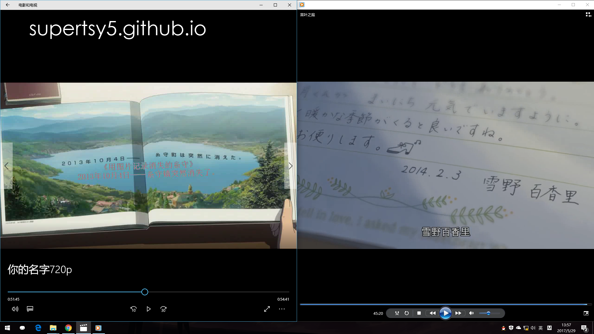
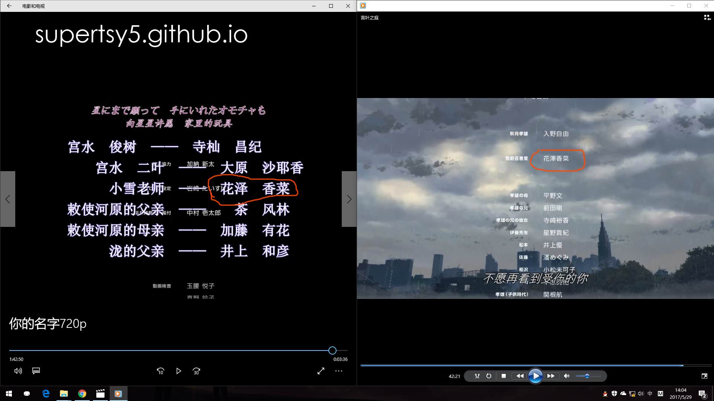
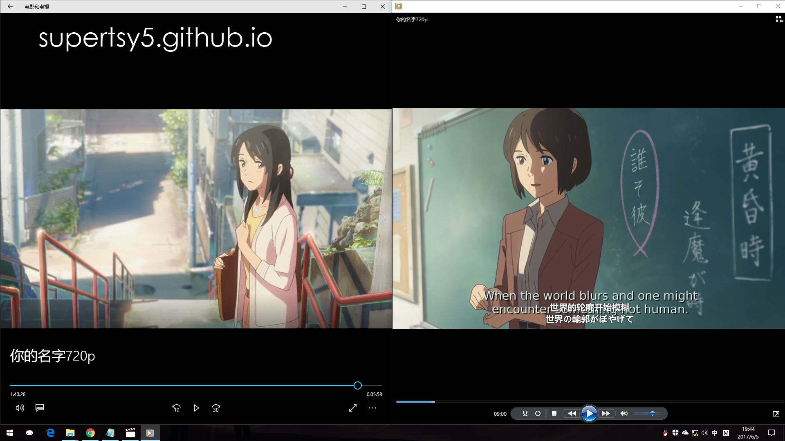
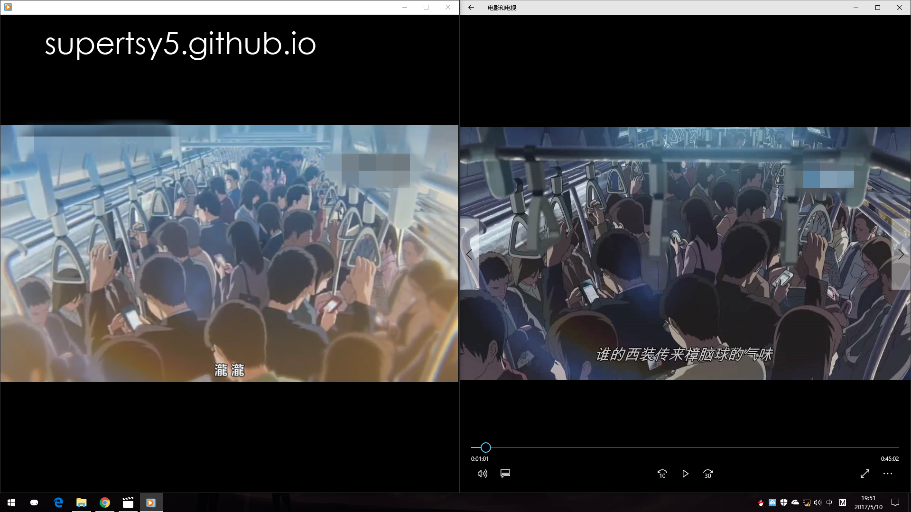

《你的名字。》中小雪老师与《言叶之庭》中雪野百香里不是同一人的几个证据
2017年6月11日 SUPERTSY5
前一段时间，日本动画导演新海诚执导的动画电影《你的名字。》大热。
网上很多人说《你的名字。》中的小雪老师是新海诚前作《言叶之庭》的雪野百香里，在这里我拿出几个证据，证明一下小雪不是雪野百香里。
首先，小雪和雪野百香里看起来并不完全一样。（左小雪右雪野）
雪野百香里去的四国岛到小雪所在的糸守町有一定距离。
小雪很可能在那次陨石撞击（2013年10月4日）中遇难（假设是旧时间线），而雪野百香里在那次撞击之后（2014年2月3日）给秋月孝雄写了信。
还有一点，三叶的古文课是在2013年9月3日，并且小雪老师也不像新来的。而雪野百香里是在9月辞职的，假设雪野百香里9月1日辞职，不可能2天就到乡下并开始教课。
截图暂无
唯一的共同点就是声优是同一人。（忽略三叶他妈的声优）
有人说小雪像长大后的三叶，还真有一点像（左三叶右小雪）
最后放一个不容易注意到的小细节（新海诚犯懒了）
转载注明出处 supertsy5.github.io